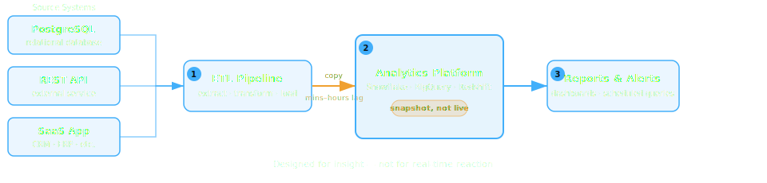
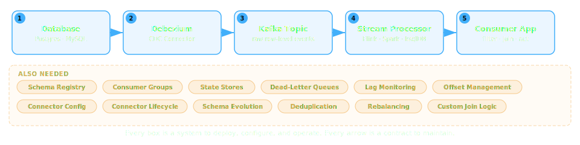

A New Take on Change-Driven Architectures
Allen Jones — SCaLE 23x
The Problem
Detecting and Reacting to Change is Harder Than It Should Be
A Familiar Scenario
- You have data spread across multiple systems
- Data changes (i.e. add, update, delete)
- Your system needs to detect the change and react
Quickly. Precisely. Reliably.
Example: Proactive Customer Care
A shipping carrier marks a delivery as "delayed" — your e-commerce platform needs to identify affected customers, check their loyalty tier, and offer compensation before they complain
Example: Supply Chain Deadlines
A supplier committed to delivering parts by a deadline, but the warehouse receiving system hasn't logged an arrival — production planning needs to adjust the schedule before the line stops
Example: Field Service Dispatch
Maintain a live set of technicians who are near an open high-priority ticket, certified for the equipment, and not already dispatched — across GPS, ticketing, HR, and dispatch systems
These are Change-Driven Systems
Systems that do something in response to a meaningful change — or the absence of change — in relevant data.
Building Change-Driven Systems
How Teams Do It Today
🔄 Approach 1: Polling
The simplest approach — your application queries the data store on a fixed interval, compares results to what it saw last time, and reacts to anything that changed.

Polling: The Challenges
📊 Approach 2: Analytics Platforms
Bring data together in a central analytics platform — a data warehouse or BI tool — where rich queries and dashboards can surface meaningful conditions across all your data.
Analytics Platforms: The Challenges
📋 Approach 3: CDC + Stream Processing
Change Data Capture reads every row-level change from the database transaction log and streams it in real time — paired with stream processing engines for filtering, joining, and transformation. The dominant approach in serious production systems today.
A rich, mature, battle-tested ecosystem:
CDC + Stream Processing: In Practice
The Complexity Cost
A Powerful Tool — For a Different Job
These platforms are event-driven infrastructure — excellent at moving events at scale.
Building a sophisticated change-driven solution on top requires substantial
engineering, configuration, and ongoing maintenance that never ends.
Event-Driven vs Change-Driven
Event-Driven
"Here's everything that happened.
Figure out what you care about."
Change-Driven
"Tell me exactly what you care about.
I'll tell you when it changes."
Event-driven puts the burden of meaning on every consumer.
Change-driven lets you declare what matters — once — and get exactly that signal, nothing more.
Introducing Drasi
What is Drasi?
An open-source platform that continuously evaluates your queries against live data and pushes typed change events to your reactions — no polling, no consumer-side state, no filter logic.
CNCF Sandbox · Apache 2.0 · Works with your existing databases and systems
Core Mental Model
Three concepts. That's the entire platform.
Sources
Connect to your existing data
No new databases or queues required — connects to what you already run
Continuous Queries
Declarative queries that run perpetually in openCypher or GQL
Simple — find all delayed orders
MATCH (o:Order)
WHERE o.status = 'delayed'
RETURN o
Cross-source — orders with customer details from different databases
MATCH (o:Order)-[:PLACED_BY]->(c:Customer)
WHERE o.total > 1000
RETURN o, c.name, c.email
Reactions
Act when query results change
One query → many reactions · One reaction → many queries
Deployment Options
drasi-lib
Rust crate · Embedded in-process
Edge · IoT · Custom pipelines
Drasi Server
Single binary or Docker container
No Kubernetes required
D4K8s
Full platform with scaling & observability
AKS · EKS · GKE
Demo 1
Let's watch Drasi detect delayed orders
across a live database — in real time.
Patterns & Advanced Capabilities
Multi-Source Queries
- Join data across heterogeneous systems in a single query
- No shared schema or common event bus required
MATCH (o:Order)-[:CONTAINS]->(p:Product)
// Order from PostgreSQL, Product from Cosmos DB
WHERE p.inventory < 10
RETURN o.id, p.name, p.inventory
Temporal Capabilities
trueFor
"Alert me if a sensor stays above threshold for 5 minutes"
trueLater
"Check back in 30 minutes — did this order ship?"
Detecting the Absence of Change
"A patient's vitals haven't updated in 10 minutes.
Is the sensor offline — or is it an emergency?"
MATCH (p:Patient)-[:HAS_MONITOR]->(m:Monitor)
WHERE m.lastReading IS NOT NULL
AND trueFor(m.lastReading = m.lastReading, 10, 'minutes')
RETURN p.name, p.room, m.lastReading
Most event-driven systems simply can't do this.
AI-Driven Workloads
- Keep embeddings & model inputs aligned with live data
- React to the specific data changes that matter to your AI pipeline
- No stale context — continuous freshness without polling
Middleware Pipeline
Transform & enrich incoming changes before they reach your queries
// Reshape nested JSON with jq before it hits the query engine
{ "transform": ".payload | { id: .orderId, total: .items | map(.price) | add }" }
Also supports: Unwind · Decode · Relabel · Promote
The Full Picture
📊 Architecture Diagram Placeholder
IMAGE NEEDED: Clean Drasi architecture diagram — multiple source icons (database, Kubernetes, API) on the left → central "Continuous Query Engine" box → multiple reaction icons (webhook, UI, event bus) on the right. Flat design, dark background, blue (#42affa) accents. ~1920x1080.
Demo 2
Can we catch a cross-database inconsistency
the moment it happens?
Practical Takeaways
When to Reach for Drasi
- You need to react to specific, meaningful data changes
- You're tired of building custom polling / filtering / state logic
- You want to standardize change detection across your org
- You're building AI systems that need continuously fresh data
Not a replacement for your event bus or streaming platform — it's a complement.
CNCF Sandbox — early-stage project with a growing ecosystem.
Getting Started
| 📖 | drasi.io — docs, tutorials, quickstarts |
| 💻 | github.com/drasi-project |
| 🐳 | Try Drasi Server locally with Docker in minutes |
| 🏛️ | CNCF Sandbox · Open governance · Apache 2.0 |
Open Source & Community
- CNCF Sandbox — open governance, vendor-neutral home
- No vendor lock-in — runs anywhere: your laptop, your cloud, your cluster
- Contribute — Sources, Reactions, middleware, docs
Rust · Go · TypeScript · You pick
github.com/drasi-project — issues tagged good first issue are waiting for you
Try the Tutorials
Stop writing code to watch for changes.
Describe what matters. Let Drasi do the rest.
drasi.io · github.com/drasi-project
Allen Jones · SCaLE 23x